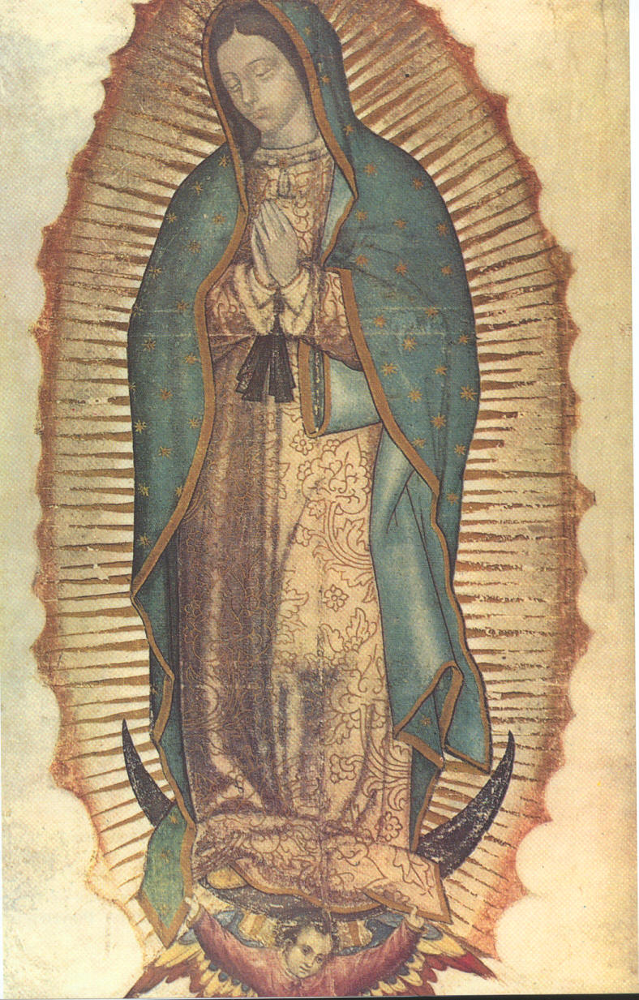

Pan Bóg doskonale stworzył świat! Kształtował jego rzeźbę, faunę i florę tak, by we właściwym czasie umieścić na nim swoje najdoskonalsze dzieło - człowieka.
Człowiek wśród niezliczonych przymiotów, którymi został przez Boga obdarowany, posiada też pragnienie zdobycia wiedzy. M. in. chciałby umieć usytuować w czasie moment Bożej decyzji, że świat już jest gotowy na pojawienie się człowieka.
Mimo ogromnego postępu naukowego na przestrzeni czasów, jest wciąż dla nas tajemnicą, kiedy nastąpiło pojawienie się kogoś, a nie czegoś. Kogoś z duszą. Kogoś umiejącego odróżniać dobro od zła i podejmujący decyzję o ich wyborze.
Bóg w swoim nieskończonym Miłosierdziu tak stworzył człowieka, aby ten, mimo skłonności do złego, po czasie na ziemi miał szansę dostąpić zbawienia w wieczności. Aby tak się stało, posłał własnego Syna na ziemię (rok 1), który umarł za wszystkie grzechy całej ludzkości wszystkich czasów (rok 33), a zmartwychwstając trzeciego dnia, dał każdemu szansę na zbawienie. Ale kto jako pierwszy dostał tę szansę?
Chyba ani australopitek (4 mln lat p. Chr.), ani homo erectus (1.5 mln lat p. Chr.) ani pierwszy homo sapiens (1 mln. lat p. Chr.), ani neandertalczyk (200.000 lat p. Chr.).
Warto pochylić się nad gatunkiem, który w 60-70 tys. lat p. Chr. przybył z Afryki i jeszcze przed ostatnim zlodowaceniem (18-20 tys. lat p. Chr.) pozostawił ślady w Jaskini Obłazowej świadczące o tym, że 23000 lat temu mogło to być miejsce kultu.
Ok. 5000 lat temu została zbudowana wielka drewniana łódź, której wrak pokryty jest obecnie pod lodem na wysokości ok. 4200 m. n. p. m. góry Ararat leżącej w Turcji niedaleko granic z Iranem i Armenią. Naukowcy uznali, że jedyne sensowne źródło historyczne powodu wyniesienia takiej ilości drewna powyżej linii drzew i linii śniegu, a także szczegółowy opis tej drewnianej konstrukcji, znajduje się w Biblii w opisie Arki.
Na terenie Mezopotamii po zdobyciu go przez Hamurabiego powstało bogate państwo: Babilonia. (XVIII w. p. Chr.)

Podobnie do Sumerów, inna najstarsza cywilizacja, Egipcjanie, utworzyli swoje państwo nad życiodajną dla nich rzeką Nil. Państwem rządził faraon z pozornie nieograniczoną władzą, którym manipulowała grupa wykształconych kapłanów. Ludzie tam wierzyli w wielu bogów, ale też i w życie po śmierci (wznoszone piramidy dla faraonów).
Bóg wywiódł Izraela z ziemi egipskiej, z domu niewoli. Bóg na górze Synaj dał Mojżeszowi Dekalog (ok. XIII w. p. Chr.)
Bóg sprawił, że Jozue po Mojżeszu, wprowadził Izrael do Kanaanu. Dopóki Izraelici byli posłuszni Bogu, dopóty przypadał okres ich świetności (czasy Dawida i pierwsza część czasów Salomona (X w. p. Chr.))
Na wskutek popadania następnych władców w coraz to większe grzechy, Bóg wydał Izrael w niewolę Babilonu w VI w. p. Chr.
Bóg w Trójcy Jedyny do dziś wspiera nas w swoim nieskończonym Miłosierdziu, a oręduje też za nami Najświętsza Maryja Panna, którą do dziś można zobaczyć, gdyż Bóg namalował ją dla nas na Tilmie Juana Diego w Guadalupe w 1531 r.
Ciało i Krew Jezusa Chrystusa są z nami obecne każdego dnia i tak będzie aż do skończenia świata podczas każdej Eucharystii.
Źródła:
Księga Rodzaju
Księga Wyjścia
Księga Jozuego
Druga Księga Samuela
Pierwsza Księga Królewska
Druga Księga Królewska
Księga Ezdrasza
Andrzej Nowak, Dzieje Polski tom 1. Skąd nasz ród
Czasy Noego - Apokalipsa. Historia odkrycia Arki Noego film dokumentalny
mapabiblii.pl
brewiarz.pl
wikimedia.org
Bolesław Prus, Faraon
biblia.wiara.pl
Wczoraj i dziś obowiązujący niestety podręcznik do historii dla klasy piątej szkoły podstawowej